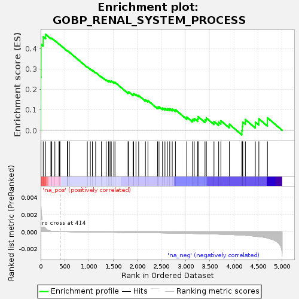
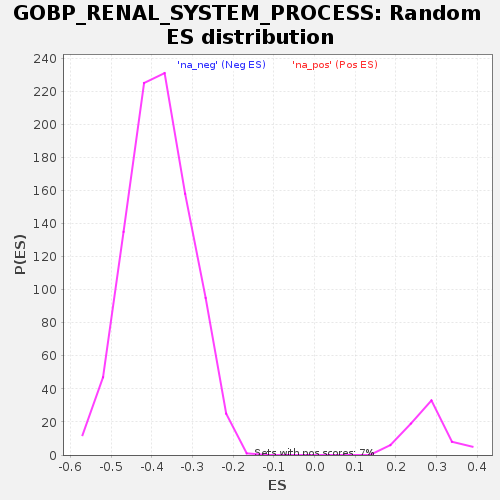

| Dataset | GEP4_vs_GEP6_residuals |
| Phenotype | NoPhenotypeAvailable |
| Upregulated in class | na_pos |
| GeneSet | GOBP_RENAL_SYSTEM_PROCESS |
| Enrichment Score (ES) | 0.470845 |
| Normalized Enrichment Score (NES) | 1.6867864 |
| Nominal p-value | 0.0 |
| FDR q-value | 0.23707671 |
| FWER p-Value | 0.875 |

| SYMBOL | RANK IN GENE LIST | RANK METRIC SCORE | RUNNING ES | CORE ENRICHMENT | |
|---|---|---|---|---|---|
| 1 | JCHAIN | 1 | 0.005 | 0.2608 | Yes |
| 2 | IGHA1 | 7 | 0.003 | 0.4221 | Yes |
| 3 | IGHA2 | 53 | 0.001 | 0.4589 | Yes |
| 4 | SLC15A2 | 102 | 0.000 | 0.4708 | Yes |
| 5 | AQP3 | 212 | 0.000 | 0.4522 | No |
| 6 | CORIN | 230 | 0.000 | 0.4516 | No |
| 7 | CYP4F2 | 294 | 0.000 | 0.4399 | No |
| 8 | GAS6 | 379 | 0.000 | 0.4231 | No |
| 9 | SUCNR1 | 391 | 0.000 | 0.4210 | No |
| 10 | OR51E2 | 400 | 0.000 | 0.4194 | No |
| 11 | SCNN1B | 556 | -0.000 | 0.3886 | No |
| 12 | HBB | 557 | -0.000 | 0.3892 | No |
| 13 | TMEM63C | 560 | -0.000 | 0.3893 | No |
| 14 | STC1 | 594 | -0.000 | 0.3834 | No |
| 15 | AGT | 966 | -0.000 | 0.3105 | No |
| 16 | ADORA2A | 1029 | -0.000 | 0.3003 | No |
| 17 | GJA5 | 1071 | -0.000 | 0.2946 | No |
| 18 | SULF1 | 1138 | -0.000 | 0.2841 | No |
| 19 | NPR3 | 1258 | -0.000 | 0.2632 | No |
| 20 | EDNRA | 1355 | -0.000 | 0.2473 | No |
| 21 | TACR1 | 1406 | -0.000 | 0.2410 | No |
| 22 | EDNRB | 1417 | -0.000 | 0.2428 | No |
| 23 | LGMN | 1450 | -0.000 | 0.2402 | No |
| 24 | BTC | 1462 | -0.000 | 0.2420 | No |
| 25 | OIT3 | 1515 | -0.000 | 0.2357 | No |
| 26 | ADGRF5 | 1538 | -0.000 | 0.2355 | No |
| 27 | KCNMA1 | 1809 | -0.000 | 0.1861 | No |
| 28 | HAS2 | 1823 | -0.000 | 0.1888 | No |
| 29 | NPR1 | 1912 | -0.000 | 0.1765 | No |
| 30 | ADM | 1924 | -0.000 | 0.1799 | No |
| 31 | MCAM | 1973 | -0.000 | 0.1760 | No |
| 32 | CD34 | 2029 | -0.000 | 0.1709 | No |
| 33 | KCNQ1 | 2169 | -0.000 | 0.1494 | No |
| 34 | EDN1 | 2221 | -0.000 | 0.1459 | No |
| 35 | SGK1 | 2420 | -0.000 | 0.1135 | No |
| 36 | SLC5A1 | 2450 | -0.000 | 0.1155 | No |
| 37 | PDGFB | 2522 | -0.000 | 0.1094 | No |
| 38 | BMP4 | 2573 | -0.000 | 0.1077 | No |
| 39 | RHPN2 | 2625 | -0.000 | 0.1061 | No |
| 40 | AQP1 | 2672 | -0.000 | 0.1057 | No |
| 41 | MYO5B | 2724 | -0.000 | 0.1046 | No |
| 42 | KIRREL1 | 2790 | -0.000 | 0.1011 | No |
| 43 | HYAL2 | 3024 | -0.000 | 0.0651 | No |
| 44 | ITGA3 | 3143 | -0.000 | 0.0530 | No |
| 45 | WNK4 | 3179 | -0.000 | 0.0579 | No |
| 46 | KLHL3 | 3251 | -0.000 | 0.0560 | No |
| 47 | PCSK5 | 3260 | -0.000 | 0.0669 | No |
| 48 | AKR1C3 | 3402 | -0.000 | 0.0520 | No |
| 49 | SULF2 | 3431 | -0.000 | 0.0601 | No |
| 50 | AMN | 3588 | -0.000 | 0.0434 | No |
| 51 | PTPRO | 3685 | -0.000 | 0.0398 | No |
| 52 | HSD11B2 | 3731 | -0.000 | 0.0470 | No |
| 53 | CYBA | 3906 | -0.000 | 0.0298 | No |
| 54 | AKR1B1 | 4166 | -0.000 | -0.0007 | No |
| 55 | SLC12A3 | 4177 | -0.000 | 0.0192 | No |
| 56 | CLDN4 | 4184 | -0.000 | 0.0402 | No |
| 57 | PRKACB | 4238 | -0.000 | 0.0528 | No |
| 58 | STK39 | 4444 | -0.001 | 0.0401 | No |
| 59 | GSN | 4517 | -0.001 | 0.0565 | No |
| 60 | BCL2 | 4695 | -0.001 | 0.0615 | No |
